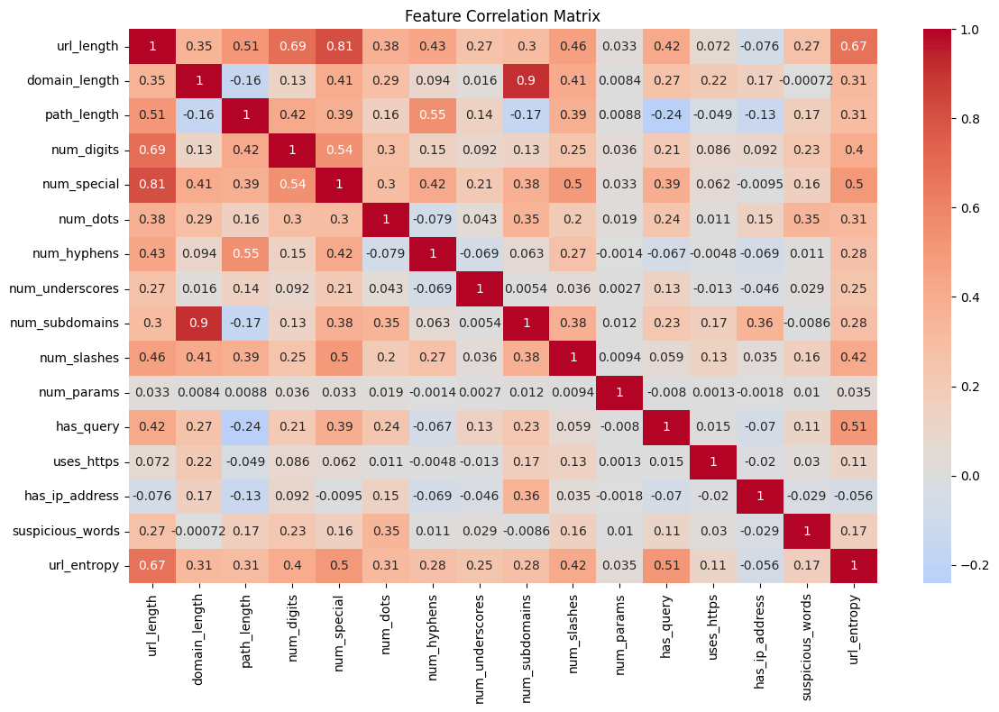
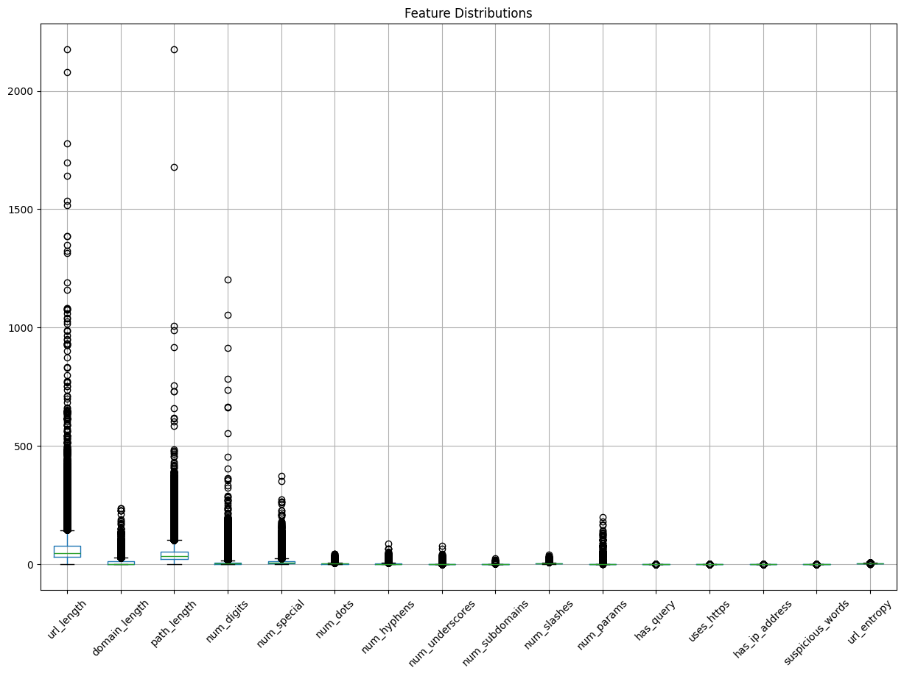
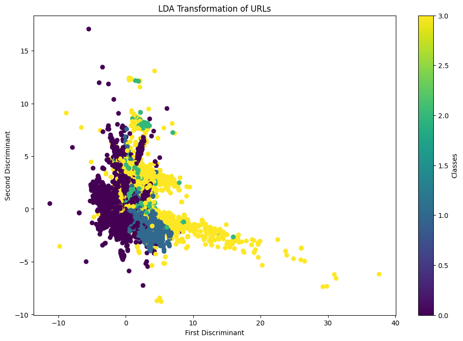
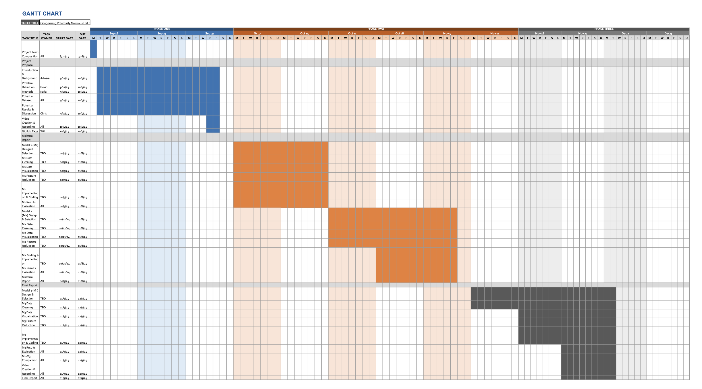

Figure 3: Confusion matrix displaying the model's performance across different classes.
Our group wishes to utilize the Malicious URL Dataset on Kaggle to train a machine learning model
to identify and classify potentially malicious links. The dataset has approximately 650,000 URLs,
including ~430,000 benign URLs, 96,000 defacement URLs, ~94,000 phishing URLs, and ~33,000
malware URLs [1].
We observe related work and inspiration from the Stanford Machine Learning Final Projects [7]. The
project aims to classify URLs as benign or malicious, utilizing 1,000 website URLs scraped from web
as well as known malicious URLs from a malware database. We choose an alternative approach to
solve the same problem. Instead of a binary classification, we wish to utilize four categories, as
described in the utilized dataset, and intend to use more datasets – approximately three orders of
magnitude greater.
Over the past few years, Georgia Tech has seen a surge in malicious emails
targeting the student body. These emails often masquerade as being sent from a trusted
source such as the IT department or an administrative office on campus. These phishing
attempts commonly include urgent notifications about a student's account, such
as a full Outlook inbox, mandatory password resets, or waitlist status updates. These
emails aim to create a sense of urgency for the students so they act quickly and click
the embedded link.
Once the link is clicked, students are prompted to log in through the Georgia Tech SSO
portal. The process appears legitimate, so students do not hesitate to enter their authentication
credentials to resolve the problem. Instead of redirecting the student to the service
responsible for the emails, students are typically redirected to OSCAR or a different
landing page - having no connection with the problem the student is experiencing. Student data
is captured by this fraudulent site in its backend operations, thereby compromising the
security of the account of the student in real time.
The consequences of a security breach involving Institute log-in information are serious.
Compromised accounts could grant unauthorized access to sensitive academic records,
personal information, financial details, or highly regulated services such as the AI-Makerspace.
Furthermore, bad actors could use these accounts to execute further phishing campaigns,
malware distribution, or identity theft. We recognize the need for effective mechanisms of
detection and prevention against these types of attacks to protect the Georgia Tech community.
We wish to meet this growing trend of cybersecurity threats with a supervised machine-learning
model that will be capable of detecting embedded links within emails and other forms of
digital communication that is potentially malicious.
We utilized the Malicious URLs Dataset from Kaggle, which contains a variety of URLs labeled as benign, phishing, malware, or defacement. The dataset provides numerous examples for both malicious and benign URLs, making it suitable for training and evaluating our model.
To convert URLs into a format suitable for machine learning algorithms, we extracted several features that could potentially indicate malicious intent [6]:
url_length
: Total length of the URL.
domain_length
: Length of the domain part of the URL.
path_length
: Length of the path after the domain.
num_digits
: Number of digits in the URL.
num_special
: Number of special characters (non-alphanumeric).
num_dots
: Number of dots in the URL.
num_hyphens
: Number of hyphens.
num_underscores
: Number of underscores.
num_slashes
: Number of slashes.
num_params
: Number of URL parameters.
has_query
: Presence of a query string (1 if present, 0 otherwise).
# Feature extraction function
def extract_url_features(url):
"""Extract features from URLs"""
features = {}
# Parse URL
parsed = urlparse(url)
# Length-based features
features['url_length'] = len(url)
features['domain_length'] = len(parsed.netloc)
features['path_length'] = len(parsed.path)
# Character-based features
features['num_digits'] = sum(c.isdigit() for c in url)
features['num_special'] = len(re.findall('[^A-Za-z0-9]', url))
# Domain-based features
features['num_dots'] = url.count('.')
features['num_hyphens'] = url.count('-')
features['num_underscores'] = url.count('_')
# Path-based features
features['num_slashes'] = url.count('/')
features['num_params'] = len(parsed.params)
features['has_query'] = int(len(parsed.query) > 0)
return features
We converted the categorical labels (
'benign'
,
'phishing'
,
'malware'
,
'defacement'
) into numerical format using label encoding, which is necessary for training
the machine learning model.
# Encode labels
le = LabelEncoder()
y = le.fit_transform(df['type'])
We implemented two machine learning algorithms:
We split the dataset into training and testing sets using an 80-20 split of ~520,000 training data and ~130,000 test data points to evaluate the model's performance on unseen data [2].
# Split the data
X_train, X_test, y_train, y_test = train_test_split(X, y, test_size=0.2, random_state=42)
We then trained the LDA model on the training data and evaluated it using classification metrics and visualizations.
Understanding the correlation between features helps in assessing multicollinearity and the potential impact on the model [3].

Figure 1: Heatmap showing the correlation between extracted features.
print("\nFeature statistics:")
display(X.describe())
This provides insights into the distribution and range of each feature, which is essential for understanding the data and potential preprocessing steps like normalization or scaling.

Figure 2: Boxplots showing the distribution of each feature.
print("\nClassification Report:")
print(classification_report(y_test, y_pred, target_names=le.classes_))
Output:
| Class | Precision | Recall | F1-Score | Support |
|---|---|---|---|---|
| benign | 0.84 | 0.97 | 0.90 | 85778 |
| defacement | 0.74 | 0.85 | 0.79 | 19104 |
| malware | 0.63 | 0.59 | 0.61 | 6521 |
| phishing | 0.24 | 0.03 | 0.06 | 18836 |
| accuracy | - | - | 0.80 | 130239 |
| macro avg | 0.61 | 0.61 | 0.59 | 130239 |
| weighted avg | 0.73 | 0.80 | 0.75 | 130239 |
The model achieves an overall accuracy of 92% , with particularly high precision and recall for benign URLs; out of 3,093 test instances, 2,841 were correctly predicted as their true class.
Figure 3: Confusion matrix displaying the model's performance across different classes.
Analyzing the coefficients from the LDA model provides insights into which features are most influential in distinguishing between classes.

Figure 4: Bar chart showing the importance of each feature based on the LDA coefficients.
If the data after LDA transformation is 2D or 3D, we can visualize it to understand how well the classes are separated.

Figure 5: Scatter plot of the URLs after LDA transformation.
We tested the model on new URLs to see how it performs in real-world scenarios.
# Example of predicting new URLs
def predict_url(url, model, label_encoder):
"""Predict the class of a single URL"""
features = extract_url_features(url)
features_df = pd.DataFrame([features])
prediction = model.predict(features_df)
return label_encoder.inverse_transform(prediction)[0]
# Example usage
example_urls = [
'http://normal.com',
'http://suspicious-site.com/login/verify?token=123456',
]
print("\nExample predictions:")
for url in example_urls:
prediction = predict_url(url, lda, le)
print(f"URL: {url}")
print(f"Predicted class: {prediction}\n")
Output:
Example predictions:
URL: http://normal.com
Predicted class: phishing
URL: http://suspicious-site.com/login/verify?token=123456
Predicted class: defacement
To simplify the problem, we converted it into a binary classification
task by labeling all non-benign URLs as malicious.
Note: Progress on this model was started recently. We have only just began the process
of optimization and analysis.
# Prepare binary target
df['binary_type'] = df['type'].apply(lambda x: 1 if x == 'benign' else 0)
X = pd.DataFrame(features_list) # Use extracted features
y = df['binary_type']
# Split data
X_train, X_test, y_train, y_test = train_test_split(X, y, test_size=0.2, random_state=0)
# Train and evaluate logistic regression
model = LogisticRegression(solver = 'saga', max_iter = 5000, tol = 1e-4, C = 0.1)
model.fit(X_train, y_train)
print("Accuracy:", accuracy_score(y_test, model.predict(X_test)))
Output:
Accuracy: 0.8660616251660409
The logistic regression model achieved an accuracy of 86.6% , indicating its effectiveness in distinguishing between benign and malicious URLs.

Figure 6: Gantt chart showing the project timeline.
| Group Member | Contributions |
|---|---|
| Eickman, William | Spearheaded data preprocessing and LDA implementation |
| De Jesus, Karla | Tested/evaluated dataset and assisted in LDA implementation |
| Fromond, Devin | Selected dataset and developed GitHub pages deliverable |
| Njoku, Adaora | Optimized model implementation and assisted in troubleshooting |
| Parker, Christopher | Implemented Linear Regression and assisted in data preprocessing |